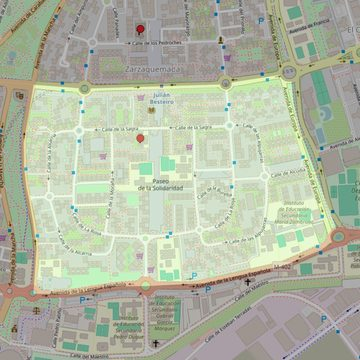

Nuestra Señora de Zarzaquemada
- Arciprestazgo
- Leganés
- Población
- Leganés
- Dirección postal
- c/ La Sagra, 10
- Código postal
- 28915
- Extensión
- 0,67 km² (67 ha)
- Teléfono
- 916 877 253
- Correo electrónico
- ntra.sra.dezarzaquemada@hotmail.com


Descargar mapaLímites según decreto
" Partiendo de la intersección de la carretera provincial que enlaza Villaverde con Leganés con la Avda. de la Mancha, sigue por el eje de dicha Avda. En dirección Norte hasta su encuentro con el Paseo Menéndez Pidal, y por el eje de dicho Paseo en dirección Sur hasta su confluencia con la Avda. de Europa. Continúan por dicha Avda. en dirección Este hasta la altura de la carretera provincial Leganés-Villaverde, siguiendo por dicha carretera en dirección Noroeste hasta su intersección con la Avda. de la Mancha, punto de partida". (Decreto de rectificación de límites de 20-12-82)